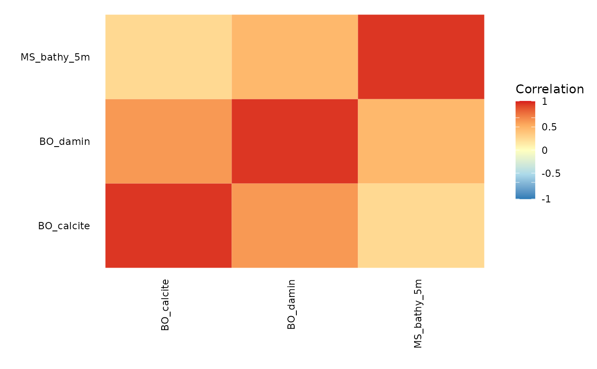

#' plot_correlation creates a plot of the correlation between
different layers
plot_correlation(layers_correlation, prettynames = list(), palette = c("#2c7bb6", "#abd9e9", "#ffffbf", "#fdae61", "#d7191c"))
| layers_correlation | matrix or dataframe. A square matrix with the
layers correlations you want to plot as returned by
|
|---|---|
| prettynames | list. Optional list with as names the layercodes and as values the name of the layer to be used in the plot. |
| palette | character vector. optional vector with 5 entries for the range of colors to be used for the correlation matrix plot. |
A ggplot object that can be printed or saved.
This function requires ggplot2 and plots the correlations for the layers in the same order as the layercodes are provided to this function.
correlation <- layers_correlation(c("BO_calcite", "BO_damin", "MS_bathy_5m")) p <- plot_correlation(correlation) print(p)